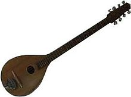

The tambura is a stringed instrument that is played as a folk instrument in
Macedonia and Bulgaria. It has doubled steel strings and is played with a
plectrum, in the same manner as a mandolin.
The Bulgarian tambura:
The Bulgarian tambura has 8 steel strings in 4 doubled courses. All the courses
are tuned in unison, with no octaves.
It is tuned D3 D3, G3 G3, B3 B3, E4 E4. It
has a floating bridge and a metal tailpiece. The instrument body is often carved
from a single block of wood and is therefore quite heavy.

The Macedonian tambura:
The Macedonian tambura has 4 steel strings in 2 doubled courses. It is tuned A A
, D D (or another pitch but at the same relative intervals of a fourth) when
playing melodies based on A tonic upon A drone.
It also may be tuned G G , D D
(or another pitch but at the same relative intervals of a fifth) when playing
melodies based on G tonic upon G drone. Sometimes octave strings are used on the
lower course. It has a floating bridge and a metal tailpeice. The instrument
body is more often made from staves like a lute.
Playing technique:
It is played with a plectrum, playing short tones which are plucked from the top
down, while playing long tones with fast tremolo.
For solo playing or to
accompany a singer, they are played in the traditional manner, which is to play
a melody on the highest course whilst using the other course or courses as a
drone.
The more modern way, which is more used in orchestras or other groups, is
to play single line melodies using all courses.
Form:
Both varieties of tambura have a long, narrow neck with 18 or 20 frets. The
frets are nowadays always arranged in the normal Western 12 note scale, although
in the past the Farkas system was also used.
The Bulgarian tambura's body is
rather shallow and flat, whereas the Macedonia tambura has a much more rounded,
bowl-like body.